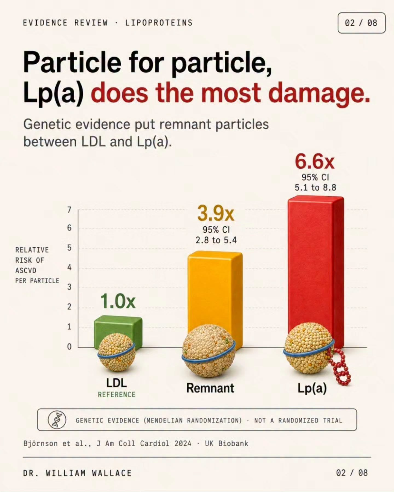
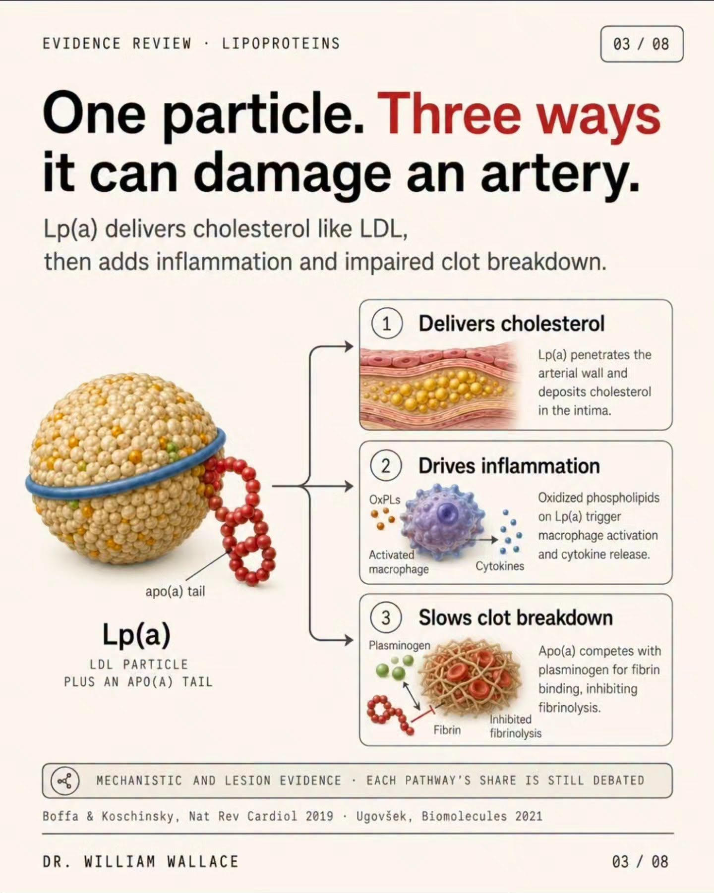
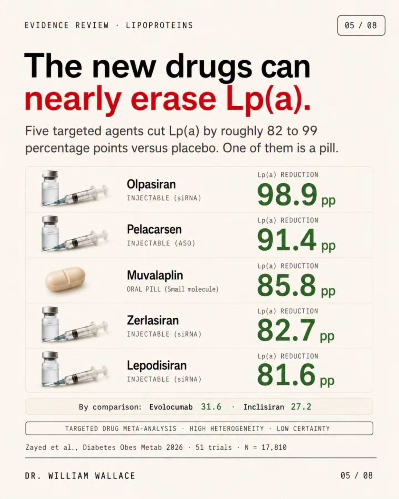

The graphics in this post do a nice job of explaining Lp(a).
#lpaHD
Not all cholesterol particles carry the same risk.
You have had your LDL checked, but you may not have had this one checked.
It is called lipoprotein(a), or Lp(a): an LDL particle with an extra tail that makes it more "dangerous." Genetic studies estimate it is roughly six times more damaging than ordinary LDL, particle for particle.
Your Lp(a) is set by your genes and fixed for life, and about one in five people carry a high level without knowing. Standard treatments do not lower it. Across 147 trials, statins, ezetimibe, fibrates, and fish oil had no effect.
A new class of drugs, including one taken as a pill, now lowers it by 80 to 99 percent. But lowering the number has not yet been proven to prevent heart attacks. The trials designed to answer that are reporting soon.
Ask your doctor to test your Lp(a) once. Because the level is genetic, most people only need a single test. It will not change your number, but it tells you how aggressively to manage what you can control.
Sources:
Björnson et al., JACC 2024; Xie et al., Atherosclerosis 2025; Zayed et al., Diabetes Obesity and Metabolism 2026; HPS2-THRIVE, NEJM 2014.



![May be an image of text that says 'EVIDENCE REVIEW LIPOPROTEINS 04 04/08 08 Most standard therapy does not lower Lp(a). Across 147 trials, statins, ezetimibe, fibrates, omega-3 and bempedoic acid had no meaningful effect. WHAT MOST PEOPLE ARE TAKING 20 Statins Ezetimibe NO EFFECT Bempedoic acid NO EFFECT NO EFFECT Omega-3 (EPA/DHA) Fibrates NO EFFECT WHAT MOVES IT AT ALL NO EFFECT Inclisiran 22% PCSK9 antibodies 29% Niacin 37% Xie et al.. Atherosclerosis 2025 CETP inhibitors 46% 147 trials DR. 145,314 WILLIAM WALLACE 04/08 08 04'](../data/images/1385814566484437/s4.png)
